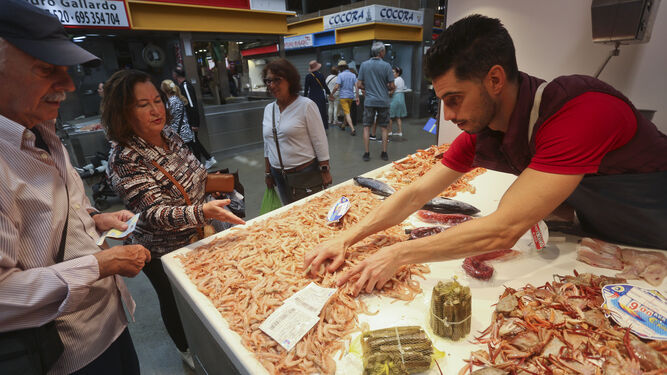

El temor a la subida de precios adelanta las compras navideñas de frescos Mariscos, pescados de gran tamaño, cordero y chivo lechal son productos que ya se están vendiendo cuando queda mes y medio para la Nochebuena La subida de los precios hace que las familias utilicen la ingeniería financiera para ahorrar  A pesar de los recibos de la luz desorbitados, del litro de gasolina a casi dos euros y de la subida de la cesta de la compra en más de un 10%, las familias siguen comiendo cada día. Con sus trucos para quitar de aquí y poner allá, porque el dinero que entra suele estar congelado al céntimo, logran capear el temporal a la espera de una mejora que no llega. Por eso, los más previsores han decidido adelantar sus compras este año por temor a un encarecimiento mayor de los precios de cara a la Navidad y ante la amenaza, además, de una huelga de transportes. Entre los clientes de la pescadería de Manuel Belman, en el mercado de Atarazanas, "hay de todo", comenta. Algunas de sus clientas se están llevando pescados grandes para congelar, así van sobre seguro ante las reuniones familiares que se avecinan. Pargo, urta, dorada, lubina, son los que más está vendiendo cuando todavía falta mes y medio para la Nochebuena. "Muchos se llevan estos pescados grandes ya para asegurarse el plato principal y luego, en los últimos días, compran mariscos, almejas y otros productos para acompañar, aunque también hay gente que lo deja para última hora", explica Belman. Esto, asegura, no siempre sale bien porque todo depende de la oferta y la demanda. En su puesto, los carabineros, las cigalas y el mero están ahora al mismo precio que en Navidad. "Sí, están caros, otras cosas no han subido tanto", apunta y señala que no suele subir su margen de beneficios porque se trata de un producto perecedero al que tiene que darle salida a diario. "Vivimos momentos muy imprevisibles, de mucha incertidumbre, y vamos día a día, pero si el transporte se pone de huelga va a ser un caos", asegura y afirma que "tengo clientes que llevan comprado ya más de un mes de cara a diciembre". Eso sí, destaca que también han apreciado una mayor contención y prudencia en el gasto. "Con lo que pagamos de luz, de agua, de combustible, la gente mide mucho a la hora de comprar pescado". En la pescadería de Luis Rubio han adelantado sus compras "las personas mayores que se llevan para sus casas y las de sus hijos". Gambas blancas, carabineros, gambas rojas, alistado de Huelva o gamba de Garrucha son los productos estrella para comprar ya y congelar. "El carabinero suele estar entre los 100 y 110 euros el kilo, y en Navidad sube porque la producción es pequeña y hay mucha más demanda", apunta. El "cascareo", sin embargo, no se suele congelar y se compra en los días previos a la cena de Nochebuena. "También se están llevando calamares grandes para rellenar, porque luego puede ser que no encuentres tanta cantidad", especifica y detalla que en noviembre es tradicional que haya una bajada en las compras para volver a subir en diciembre. Andrés López y su hermano Víctor, de la pescadería AV, están vendiendo para congelar a los clientes de fuera, "a los que vienen de Madrid o de los pueblos, los malagueños de la ciudad todavía no mucho", dice Andrés y sostiene que los precios se están manteniendo en la mayoría de sus productos. Este viernes tenían el langostino tigre a 26 euros el kilo. En navidades pasadas ha llegado a venderse en 32 ó 33 euros el kilo. "Todo depende de la cantidad que entre, hay mucha demanda a la vez, todo el mundo consume lo mismo al mismo tiempo, y eso hace que se incrementen los precios porque no hay suficiente producto". Andrés explica que ya ha tenido que comprar las patas de cangrejo para abastecer su puesto porque se estaban agotando. Y confiesa que la inversión que han hecho para agrandar la pescadería les ha revertido en una mejora de las ventas. Eso sí, "se nota que llevan unos meses comprando algo menos" parte de su clientela habitual. En la veterana carnicería Medina, abierta desde 1931, la clientela ha comenzado a sondear el mercado, a preguntar por precios y encargos. Sin embargo, todavía no están comprando, asegura Diego Medina. Cordero, solomillo, chivo malagueño y pollo para rellenar están entre los más demandados. "Para nosotros el 23 de diciembre es el día más fuerte de ventas del año, toda la clientela se concentra en una semana o diez días y la mayoría, entre un 70 y un 80%, son encargos", comenta Medina. Hasta 300 en un día pueden despachar. En cuanto a los precios, el cordero lechal es el que más sube de precio. Se paga unos cuatro euros más el kilo en Navidad que ahora en noviembre. Sus fieles no suelen comprar mucho para congelar. "Con el covid sí que lo hicieron para quitarse de bullas, pero ahora no está siendo especialmente apreciable el anticipo de las compras", agrega. En la carnicería Asencio sí que están ya comprando para las Navidades. Sobre todo, dice el dueño, cordero, ternera y solomillo de cerdo. "A partir de la huelga de este lunes todo va a subir de precio", estima. La incertidumbre, incluso, se ha adelantado y apunta que el kilo de cordero ha subido tres euros entre el lunes y este viernes. "En líneas generales hemos procurado mantener los precios y estamos vendiendo bien, pero no sabemos lo que podrá pasar a partir de ahora", concluye Asencio. De lo que sí es bien consciente es que ha tenido que pagar más del doble de electricidad. Así, las cuentas no salen igual de bien.